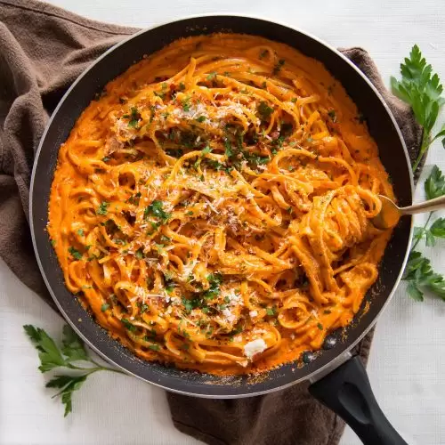

Homepage
"Tylers Pasta" - Creamy pasta with peppers
This is a website where you do not have to read my whole life story and some crap about how my mom made this meal on some hot summer day during my childhood. We are in the business of recipes. That is all. The recipe is below.
What is this pasta?

This pasta is essentially a red sauce with some cream cheese and peppers in it. Important things to note: The version
of this pasta described here is one that I have adapted to fit my needs, being Parosmia. It does not include garlic
or butter, and vegetable oil has been substituted for avacado oil.
Here are the ingredients
- Pasta of your choice, I usually use linguine, but spaghetti or fettuccinni work fine.
- El Pato jalepeno salsa (1 can)
- Pizza sauce, yes, I said pizza sauce
- Green bell pepper
- Red bell pepper
- Avacado oil
- Cream Cheese
How do I make Tyer's Pasta with all those things?
- Cook the noodles to your liking
- pour 1-2 tablespoons of avacado oil in a pan on medium heat
- dice peppers and add to oil
- When peppers start sizzling pretty good, add about 1/2 cup of pizza sauce, and maybe 2 tablespoons El Pato salsa. Stir well.
- When sauce mixture starts to bubble, add cream cheese. as much or as little as you want. Stir well.
- Add 2 tablespoons parmesan cheese. Stir well. Season to taste with salt and pepper.